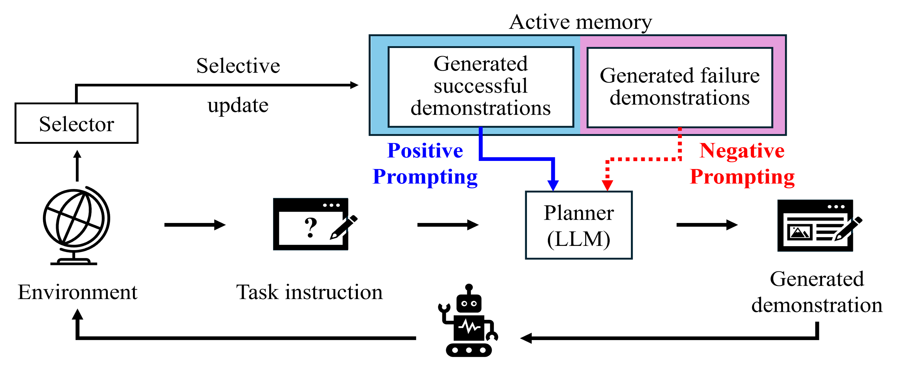

Contrastive In-Context Learning with Active Memory
for Task Planning
CoRL 2025
Workshop on Making Sense of Data in Robotics: Composition, Curation, and Interpretability at Scale
Contrastive In-Context Learning with Active Memory leverages both successful and failed experiences through dual prompting within a compact and diversity-aware active memory.
Abstract
Large language models (LLMs) have shown great promise in robotic task planning through in-context learning with a few successful demonstrations, guiding the model to generate feasible task plans. However, existing approaches typically overlook the learning signals from failures, often relying solely on manually curated positive examples. Recent methods attempt to utilize failures by transforming them into feedback or improved plans through LLMs, which involves additional steps to generate knowledge that can serve as positive examples for learning. Moreover, these methods often store examples indiscriminately in an external memory, leading to unbounded memory expansion and inefficiencies in both retrieval and resource usage.
In this work, we propose a contrastive in-context learning framework for task planning that utilizes both successful and failed demonstrations through a dual prompting strategy. It enables the model to learn by contrasting positive prompts from successful ones, which guide correct behaviors, and negative prompts from failed ones, which prevent recurring mistakes. To implement this strategy efficiently, we introduce an active memory with a limited budget that selectively incorporates useful demonstrations generated by an LLM during task planning.
Experiments on diverse multi-object, long-horizon, and spatially constrained manipulation tasks show that our method improves the average task success rate by 10.7%, while reducing memory size by up to 75.0% compared to existing LLM-based task planning approaches.
Method

Our method aims to turn the experiences generated during deployment into useful learning signals. The framework consists of two key components:
- Dual prompting. Since the generated experiences include both successes and failures, successful cases guide the planner on what to imitate, while failed cases help it recognize what should be avoided and prevent repeated mistakes through contrastive in-context learning.
- Active memory. To avoid storing redundant or less informative experiences, we maintain a compact memory with a limited budget and update it through diversity-aware selection.
Experiment video
Poster
BibTeX
@inproceedings{
lee2025contrastive,
title={Contrastive In-Context Learning with Active Memory for Task Planning},
author={Jiho Lee and Kyungjae Lee and Eunwoo Kim},
booktitle={Workshop on Making Sense of Data in Robotics: Composition, Curation, and Interpretability at Scale at CoRL 2025},
year={2025},
url={https://openreview.net/forum?id=NaayWmHgL1}
}